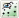
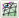
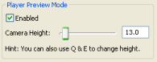

F4 • Free
• Terrain
• Obstacle
This value can also be set by the Object panel's Locking Mode group box.
F6 • Normal – Also activated by
• Chunk borders – Also activated by
• Pole markers – Also activated by 
• Wireframe – Also activated by 
F8 • World
• Local
• View
This value can also be set by the Object panel's Coordinate System group box.
~ (tilde) This mode can also be toggled by or by the Navigation panel's Player Preview Mode group box's Enabled check box.

B Same as setting Options tab's, Show BSP field to Custom.
E Increases the camera height for the mode.
M This value can also be set by the Object panel's Drag On Select check box.

Q Decreases the camera height for the mode.
R Recreates the selected shell(s).
V
Makes a copy of the selected shell, and
links both by a matching portal.
V must be pressed before
and during the middle button click.
Ctrl+L  Cycles through lighting modes:
Cycles through lighting modes:• Standard
• Dynamic
• Specular
Shift+F4 bigworld/tools/worldeditor/show<nnn>.bmp,
where <nnn>
is a sequential number. button click
Links the selected shell via a matching
portal to the shell clicked using the
middle button.
If V is pressed:
Makes a copy of the selected shell, and
links both by a matching portal.
V must be pressed before
and during the middle button click.